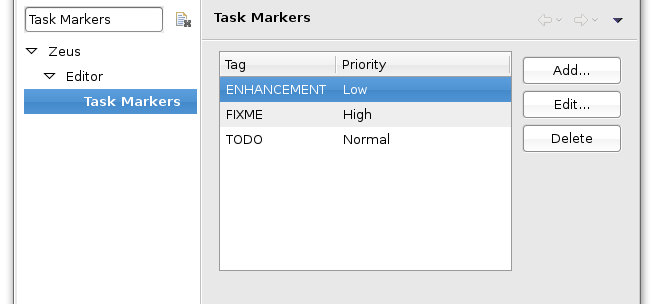
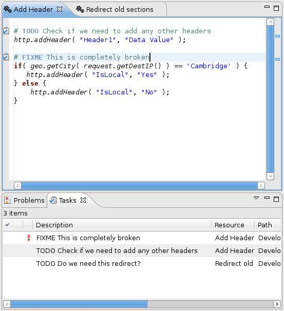

Task markers can be used to generate 'place holders' in your code. You can use certain pre-defined words in comments, such as TODO or FIXME, in order to remind yourself when something needs to be revisited at a later date. These markers will appear in the 'Tasks' tab of the pane at the bottom of the screen.
To use task markers in TrafficScript, you first need to tell Eclipse which tags are to be identified. This can be done in the Zeus section of the Eclipse Preferences. Go to the Task Markers list and click 'Add...'. Here you can add or amend your text markers.
Fig.1: Setting up Task Markers in the Preferences
When you need to use a tag, simply add a comment using a # (hash) symbol in front of a text tag you've previously set up (see above), e.g. # TODO Update this later, and save your rule. This will automatically be added to the Task list. Double-clicking on this entry will take you straight to the location of the tag in your rule set. Note that the actual location is shown in the Task list, so multiple uses of the same tag can be differentiated.
Fig.2: Using Task Markers in a rule